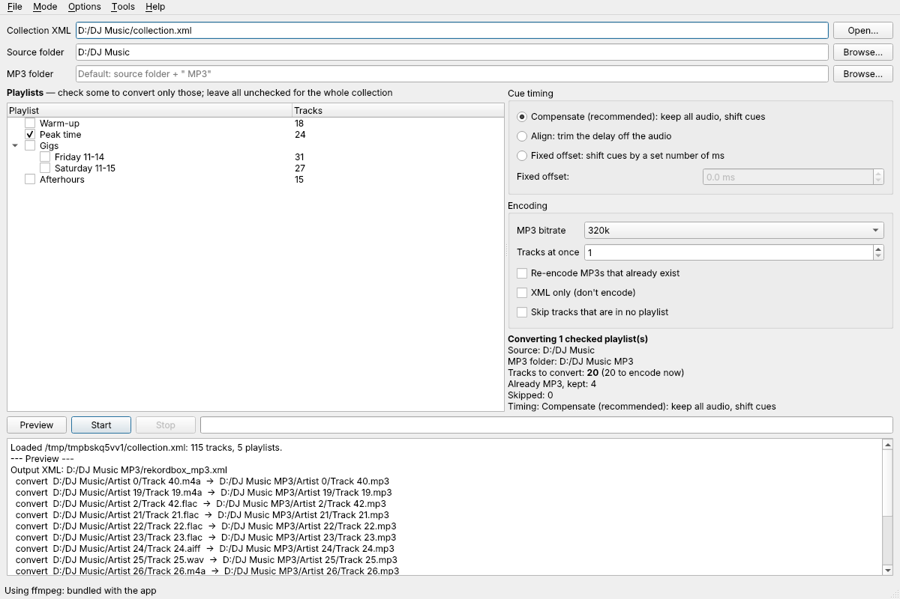

🎧 MP3 Copy for rekordbox
Makes an MP3 copy of a FLAC/WAV/AIFF/ALAC rekordbox library, keeping playlists, hot cues, loops, beatgrids and ratings, with cue timing measured in rekordbox to the millisecond.
🎛️ Use the app
- Unzip
MP3CopyForRekordbox-…-windows.zip. - Run
MP3CopyForRekordbox.exe. - Follow Using the app.
🔨 Build the app
- Install Python:
winget install Python.Python.3.12 - Double-click
packaging\build_windows.bat - The app lands in
dist\. Details: Building.
📖 Read the code
- Code tour: every section's What / Why / If it goes wrong, beside its code
- How the code is organized
- Cue timing: the measurements behind the modes

🧪 Run from source
py -m pip install -r requirements.txtpy -m appopens the windowpy -m app collection.xml --dry-runruns the command line
✅ Tests
py -m pip install -r requirements-dev.txtpy -m pytest -q(needs ffmpeg with libmp3lame)- They check real audio timing, not just the XML.
⚖️ Licenses
- Third-party notices (FFmpeg, Qt, Python)
- rekordbox is a trademark of AlphaTheta Corporation; this project is not affiliated with it.